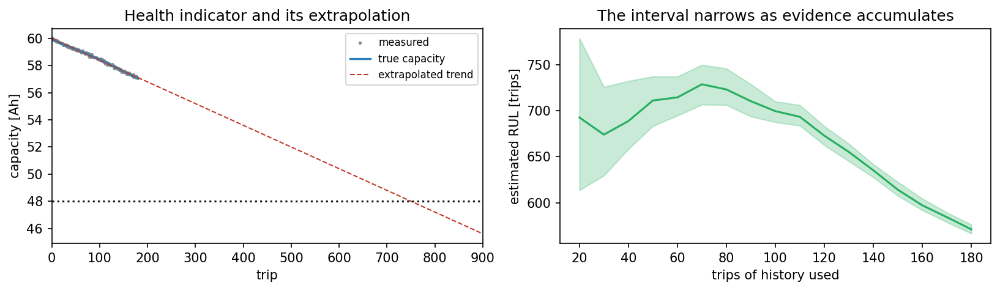
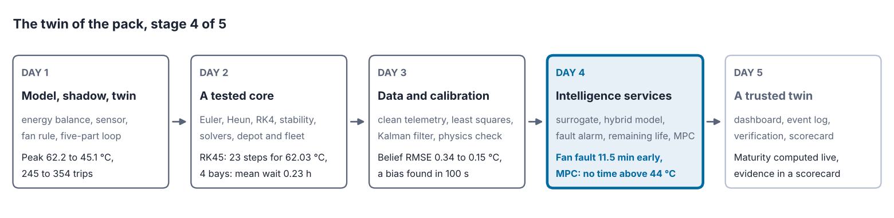
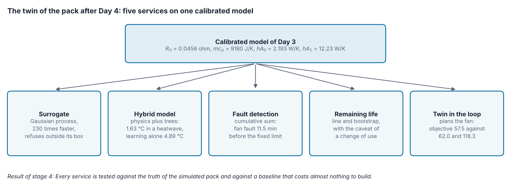
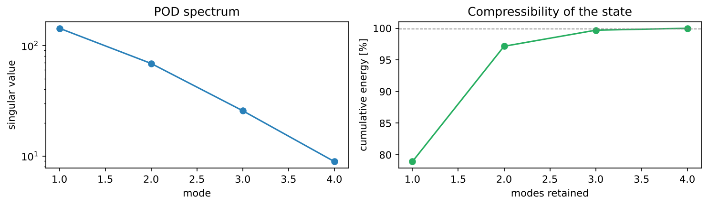

Overview
With a calibrated model in place, the twin can start to reason. This day adds the services that make a twin intelligent: surrogate models that answer in milliseconds instead of seconds [1], hybrid models that let data correct the physics [2], detection of faults from the residuals between model and measurement [3], estimation of the remaining useful life [4], what-if scenarios, and a twin that plans the fan of the pack ahead of time. Each service is tested against the truth of the simulated pack.
Day at a glance
flowchart LR A["A calibrated core"] --> B["Surrogate models"] B --> C["Hybrid models"] A --> D["Fault detection"] D --> E["Remaining useful life"] A --> F["What-if and control"] E --> S["The twin of the pack, stage 4"] S --> G["Your asset"]
Every method on this page is also written as Python code in the Colab notebook of the day. A Colab notebook is a document of text and Python code that runs in the web browser, with nothing to install. Its code is divided into numbered sections. Each orange box on this page names the section whose code carries out what the text above the box explains. The box says what to run and what to look at in that section, and its button opens the notebook at that place. The practice parts and the self-assessment of the day are in the interactive lab.
Python step 4: Plots and the scikit-learn interface
Python code in the Colab notebook, right after Section 0 (setup). Open the notebook and run this step cell by cell: It consists of short pieces of Python code with their explanations, a quick check and three exercises. Topics: Data and a labelled scatter plot · Training and test data · Fit, predict, measure · The value of a physical feature.
The notebook continues with the hands-on sections. The study path, the daily task and the research assignment are on the day overview.
A calibrated core
Days 1 to 3 built the twin of the pack layer by layer. Day 1 stated the model and closed the loop from the sensor to the fan. Day 2 verified the simulation core. Day 3 cleaned the telemetry, calibrated the model, fixed the scale of its parameters with a separate measurement of the heat capacity and replaced the overwriting of the belief by a Kalman filter.
The twin now knows the state of the pack well, but it acts on this knowledge only through a fixed fan rule and an alarm. This day adds the services that turn the calibrated model into answers and decisions: fast surrogate models, a hybrid model that learns what the physics misses, fault detection, the remaining useful life of the pack and a controller that plans the fan.
Every service of the day calls the calibrated model of Day 3. Two hours of simulated driving take a fraction of a second, which is fast enough for monitoring but too slow when a planner must try thousands of options, or when an engineer wants to explore a design space interactively.
The model describes the pack by its state, four numbers that change in time. They are the state of charge SoC between 0 and 1, the cell temperature \(T\) in °C, the usable capacity \(Q\) in Ah and the internal resistance \(R\) in ohm. Three inputs act on the state: the current \(I\) of the load in A, the duty \(u\) of the cooling fan, from 0 for off to 1 for full speed, and the ambient temperature \(T_{\mathrm{amb}}\). The model has one equation for each state:
The first equation lets the charge fall with the current, and its factor 3600 converts ampere-hours into ampere-seconds. The second equation is an energy balance. The current heats the pack with the power \(I^2 R\) in W, and the air removes the power \((hA_0 + hA_1 u)(T - T_{\mathrm{amb}})\). The difference, divided by the heat capacity \(m c_p\), is the rate at which the temperature rises. The conductances \(hA_0\) and \(hA_1\) are given in W/K and the heat capacity in J/K.
The third equation is the ageing law. The capacity fades in proportion to the size of the current, \(|I|\), and faster when the pack is hot. Its exponential function \(\exp\) is called an Arrhenius factor, in which \(T + 273.15\) is the temperature in kelvin. The factor equals 1 at 25 °C, about 1.5 at 35 °C and about 2.2 at 45 °C. The fourth equation lets the resistance grow slowly once the capacity has fallen below its value when new, \(Q_0\). The parameter \(R_0\) is the resistance of the new pack: It is the value at which the state \(R\) starts, and it sets the speed of this growth.
| Symbol | In the code | Meaning | Value |
|---|---|---|---|
| \(R_0\) | R0 | resistance of the new pack | 0.0456 ohm, calibrated on Day 3 |
| \(m c_p\) | m_cp | heat capacity of the pack | 9180 J/K, measured on Day 3 |
| \(hA_0\) | hA0 | conductance of the passive cooling | 2.193 W/K, calibrated on Day 3 |
| \(hA_1\) | hA1 | additional conductance at full fan | 12.23 W/K, calibrated on Day 3 |
| \(Q_0\) | Q0 | capacity of the new pack | 60 Ah |
| \(k_{\mathrm{age}}\) | k_age | capacity lost per ampere-second at 25 °C | \(5.5 \times 10^{-8}\) Ah |
| \(E_{aR}\) | Ea_R | sensitivity of the ageing to temperature | 3800 K |
| \(T_{\mathrm{ref}}\) | T_ref | reference temperature of the ageing law | 298.15 K, which is 25 °C |
| \(P_{\mathrm{fan}}\) | fan_W | electrical power of the fan at full duty | 25 W |
The four calibrated values lie within 2 percent of the true values of the simulated pack of Days 1 to 3. Most trips of the day use the highway cycle of the course, a current that swings slowly between 34 and 46 A, \(I(t) = 40 + 6 \sin(2 \pi t / 1800)\) with the time \(t\) in seconds. The equations advance in steps of \(\Delta t\) seconds with the Runge-Kutta method of fourth order of Day 2. The timing of two hours uses steps of 1 s, and the services of the day use 5 to 20 s.
Two numbers summarise the thermal behaviour. With a constant current and fan duty, the temperature settles where heating and cooling balance, \(\dot{T} = 0\). This steady-state temperature \(T_{\mathrm{ss}}\), the time constant \(\tau\) and the temperature at a time \(t\) after a start at \(T(0)\) follow from the second equation:
The time constant tells how fast the temperature approaches the steady state. After one time constant it has covered about 63 percent of the distance, and after three time constants about 95 percent.
At 40 A the pack produces \(40^2 \times 0.0456\)\({} = 1600 \times 0.0456\)\({} = 72.96\) W of heat, about 73.0 W. With the fan at full duty the conductance is \(2.193 + 12.23 = 14.42\) W/K. The pack settles \(73.0 / 14.42 = 5.1\) °C above the ambient temperature, with a time constant of \(9180 / 14.42 = 637\) s, and \(637 / 60 = 10.6\), about 11 minutes. In this and the following worked examples, intermediate values are rounded, and each step continues with the rounded value.
With the fan off the conductance is 2.193 W/K. The steady state lies \(73.0 / 2.193 = 33.3\) °C above the ambient temperature, and the time constant is \(9180 / 2.193 = 4186\) s, and \(4186 / 60 = 69.8\), about 70 minutes. A trip of 90 minutes, 5400 s, lasts \(5400 / 4186 = 1.29\) time constants, and with \(e^{-1.29} = 0.275\) it covers \(1 - 0.275 = 0.725\) of the distance. On a day of 35 °C the steady state is \(35 + 33.3 = 68.3\) °C, so a pack that starts at 36 °C reaches \(36 + 0.725 \times (68.3 - 36)\)\({} = 36 + 0.725 \times 32.3\)\({} = 36 + 23.42\)\({} = 59.4\) °C. In the comparison of controllers at the end of the day, where the current swings, the pack without cooling ends such a trip at 59.2 °C.
On this day the pack on which the services are tested is itself a simulation with the calibrated parameters, to which a section adds a fault or a missing effect where it needs one. Every experiment therefore has a known right answer. Each service is also compared with a baseline, a simple alternative that costs almost nothing to build, such as a fixed alarm limit next to the cumulative sum or a fan that is always on next to the planning controller. A service earns its place only when it beats its baseline by a margin that justifies its complexity.
Interactive lab, Part A. Six needs of an operator, each to be matched with the service of the twin that meets it.
Python code in the Colab notebook, Section 1. Open Section 1 of the Colab notebook and run it. The variable CAL holds the calibrated parameters of the table above, and the cell prints the four of them that Day 3 determined. It then simulates two hours of the pack with simulate in steps of 1 s and prints the time that this takes, about a third of a second.
Surrogate models and their limits
A surrogate learns the input-output behaviour of the full model from a set of simulations and then answers new questions almost instantly. The surrogate of the project answers one question: how hot the pack gets during one hour of highway driving. The answer depends on three inputs, which form a query \(q\): the ambient temperature \(T_{\mathrm{amb}}\), the level of the current \(I_s\) and the fan duty \(u\). The simulation of the hour runs in steps of 5 s with the current \(I(t)\)\({} = I_s\,(1 + 0.15 \sin(2 \pi t / 1800))\) and returns the highest temperature:
The planned set of simulations from which a surrogate learns is called a design of experiments. The design of the day draws \(n = 120\) queries \(q_1, \ldots, q_n\) at random, each input \(j\) uniformly between a lower bound \(\mathrm{LO}_j\) and an upper bound \(\mathrm{HI}_j\). These bounds form the training box, also called the design box. The simulated peak temperatures \(y_1, \ldots, y_n\) of these queries are the training outputs.
| Input of the query | Symbol | Lower bound | Upper bound |
|---|---|---|---|
| ambient temperature | \(T_{\mathrm{amb}}\) | 20 °C | 40 °C |
| level of the current | \(I_s\) | 20 A | 55 A |
| fan duty | \(u\) | 0 | 1 |
The baseline surrogate is a quadratic formula. Each input is first standardised, \(\tilde{q}_j = (q_j - m_j) / s_j\), with the mean \(m_j\) of input \(j\) in the training set and its standard deviation \(s_j\), the usual measure of how far values scatter around their mean. The prediction, marked with a hat, adds a constant, the three standardised inputs, their squares and their products:
The ten coefficients \(w\) are chosen by least squares, the method of Day 3, with a small penalty on large coefficients that is called ridge regression.
A Gaussian process, abbreviated GP, is a good choice for a few inputs, because it also reports how uncertain each answer is [1]. It assumes no formula, only that queries close to each other have similar outputs. Closeness is measured by a kernel, a function \(\kappa(q, q')\), with the Greek letter kappa, that is large when the queries \(q\) and \(q'\) are close and falls towards zero as they move apart. The simplest kernel, which the animation of this section uses, is the squared exponential:
→ These formulas with numbers, step by step: Lab Part B, steps 1 and 2.
Here \(d\) is the distance between the two queries, in which the difference of every input \(j\) is measured in units of a length scale \(\ell_j\), a script letter l. The length scale is the distance over which the output changes noticeably. The amplitude \(\sigma_f\) is the typical size of the deviations of the output from its mean. At \(d = 0\) the kernel equals \(\sigma_f^2\), and at three length scales it has fallen to about one percent of that. The surrogate of the day uses a relative with the same distance \(d\), the Matérn kernel with the smoothness 5/2:
→ This formula with numbers, step by step: Lab Part B, step 6.
From the kernel, the Gaussian process computes two numbers for a new query \(q\): a prediction \(\mu(q)\), with the Greek letter mu, and a standard deviation \(s(q)\) that states how uncertain the prediction is:
→ These formulas with numbers, step by step: Lab Part B, steps 3 and 4.
The bold letters are lists and tables of numbers. \(\mathbf{y}\) is the list of the \(n\) training outputs and \(\bar{y}\) their mean. \(\mathbf{k}(q)\) is the list of the kernel values \(\kappa(q, q_i)\) between the new query and the training queries, and the sign \(\top\) lays it on its side for the multiplication. \(\mathbf{K}\) is the table of the kernel values \(\kappa(q_i, q_j)\) between all pairs of training queries. \(\mathbf{I}\) is the identity table, with ones on its diagonal and zeros elsewhere, and the noise variance \(\sigma_n^2\) allows the outputs a small random error. The power \(-1\) stands for solving a system of \(n\) linear equations, which is done once during training.
In words: The prediction starts from the mean of the training outputs and adds a weighted sum of their deviations from it, in which the training queries close to \(q\) count most. The squared standard deviation, called the variance, starts from \(\sigma_f^2\), and every training query close to \(q\) takes a part of it away. Far from all training queries the prediction falls back to the mean. The standard deviation returns to \(\sigma_f\) there and never exceeds it, however wrong the prediction is.
The animation has one input, the current, and uses the squared exponential kernel with \(\sigma_f = 12\) °C and \(\ell = 9\) A. Suppose that the mean is 50 °C, that there is no noise, and that one training point is known: At 40 A the simulation gave 53 °C, which is 3 °C above the mean. With a single training point, \(\mathbf{K}\) is the single number \(\kappa(40, 40) = 12^2 = 144\). The formulas become \(\mu(q)\)\({} = 50 + \kappa(q, 40) \times 3 / 144\) and \(s(q)^2\)\({} = 144 - \kappa(q, 40)^2 / 144\).
At the training point itself the kernel value is 144. The prediction is \(50 + 3 = 53\) °C and the standard deviation is 0. One length scale away, at 49 A, the distance is \(d = (49 - 40) / 9 = 1\), so \(d^2 / 2 = 0.5\) and \(\kappa\)\({} = 144 \times e^{-0.5}\)\({} = 144 \times 0.6065\)\({} = 87.3\). The prediction is \(50 + 87.3 \times 3 / 144\)\({} = 50 + 261.9 / 144\)\({} = 50 + 1.82\)\({} = 51.8\) °C. For the standard deviation, \(87.3^2 = 7621.3\) and \(7621.3 / 144 = 52.93\), so \(s\)\({} = \sqrt{144 - 52.93}\)\({} = \sqrt{91.07}\)\({} = 9.5\) °C.
Three length scales away, at 67 A, \(d = 27 / 9 = 3\) and \(d^2 / 2 = 4.5\), so \(\kappa\)\({} = 144 \times e^{-4.5}\)\({} = 144 \times 0.0111\)\({} = 1.6\). The prediction is \(50 + 1.6 \times 3 / 144\)\({} = 50 + 0.03\)\({} = 50.03\) °C, practically the mean, and the standard deviation is \(\sqrt{144 - 1.6^2 / 144}\)\({} = \sqrt{144 - 0.02}\)\({} = 12.0\) °C, the value of \(\sigma_f\).
Interactive lab, Part B. The same prediction with sliders for the query, the length scale and the amplitude, and with a second training point on request. Each distance, kernel value, weight and variance is shown one step at a time, and a figure draws the prediction with its band over all currents.
The amplitude, the length scales and the noise variance are not set by hand. Training starts from guesses, 8 °C, 12 A and 0.4 for the three length scales, and adjusts them so that the training outputs become as probable as possible under the model, a principle called maximum likelihood.
Both surrogates are tested on 40 new random queries inside the box, with the root mean square error, abbreviated RMSE, and the largest single error:
Here \(y_i\) is the simulated peak temperature of test query \(i\), \(\hat{y}_i\) the prediction of the surrogate and \(n = 40\). The RMSE is a typical size of the error in °C, in which large errors count more than small ones: For three errors of 1, 1 and 4 °C it is \(\sqrt{(1 + 1 + 16) / 3} = 2.4\) °C. The quadratic formula has an RMSE of 0.76 °C and a largest error of 3.1 °C. The Gaussian process has an RMSE of 0.02 °C and a largest error of 0.11 °C.
The value of a surrogate is its speed, and its price is the design of experiments. The speed-up and the break-even point, the number of queries after which the surrogate has saved more time than its design cost, are
with the time \(t_{\mathrm{sim}}\) of one simulation, the time \(t_{\mathrm{sur}}\) of one prediction of the surrogate and the time \(t_{\mathrm{design}}\) of the whole design. In one run these are 32.13 ms, 0.14 ms and 3.6 s. The speed-up is \(32.13 / 0.14\), about 230: The surrogate predicts the peak temperature about 230 times faster than the simulation. Every query saves \(32.13 - 0.14 = 31.99\) ms, about 0.032 s, so a design of 3.6 s is paid back after about \(3.6 / 0.032 = 113\) queries. The unrounded times give 114. Timings change from run to run, so another run gives other values of a similar size.
Python code in the Colab notebook, Section 2. Open Section 2 of the Colab notebook and run it. The function peak_T is the simulation behind every query. The cell draws the 120 training queries Xd, simulates their outputs yd and fits the quadratic formula poly and the Gaussian process gp. It prints the RMSE and the largest error of both on 40 test queries, the time per query of the simulation and of the surrogate, and the break-even point. To see the fitted amplitude and length scales, add a cell with print(gp.kernel_).
The knowledge of a surrogate, however, ends at the edge of the range it was trained on. A test draws 25 random queries from each of three boxes, the training box and two boxes whose sides are 25 and 60 percent longer, and compares both surrogates with new simulations. Many of these queries still lie inside the training box, 14 and 5 of the 25, and the fan duty is kept between 0 and 1.
| Queries drawn from | RMSE, quadratic | RMSE, Gaussian process | Largest error, quadratic | Largest error, Gaussian process |
|---|---|---|---|---|
| the training box | 1.09 °C | 0.04 °C | 3.49 °C | 0.15 °C |
| a box with sides 25 percent longer | 0.63 °C | 0.03 °C | 2.21 °C | 0.14 °C |
| a box with sides 60 percent longer | 2.53 °C | 0.32 °C | 8.34 °C | 1.12 °C |
A small step outside costs the Gaussian process nothing, but in the largest box its error is eight times its error inside. Single queries show what its standard deviation is worth. With the current far outside the box, \(q = (30, 80, 0.5)\), it predicts 66.2 °C with a standard deviation of 1.0 °C, and the simulation returns 65.3 °C. Far outside on two inputs, \(q = (60, 90, 0)\), it predicts 148.1 °C with a standard deviation of 2.9 °C, and the simulation returns 156.9 °C. This error of \(156.9 - 148.1 = 8.8\) °C is \(8.8 / 2.9 = 3.0\) times the stated standard deviation.
The standard deviation grows outside the box, but it measures the distance from the training data and cannot know how the physics continues there. A surrogate must therefore refuse questions outside its box. A guard tests every input \(j\) of a query, \(\mathrm{LO}_j \le q_j \le \mathrm{HI}_j\), and passes the query to the simulation when the test fails. A real pack would have failed long before 150 °C, so the last query also lies outside the range in which the simulation itself can be trusted.
An experienced baker estimates the baking time of a loaf from its weight, a rule learned from hundreds of loaves and much faster than any calculation of heat flow. For a loaf twice as heavy as any before, the rule gives an answer just as quickly, and nothing in the answer warns that it is a guess. A surrogate behaves in the same way, which is why its guard has to refuse questions outside the range of its training.
Animation. A Gaussian-process surrogate of the peak temperature against the current, trained on eight points inside the shaded box. Move the query outside the box and compare the error with the standard deviation, which the legend and the readout shorten to std.
The animation shows the effect with one input and the kernel of the worked example. Its eight training points lie between 20 and 50 A, where the prediction follows the true curve within a few hundredths of a degree. At a query of 70 A the true value is 119.53 °C, the prediction 54.20 °C and the stated standard deviation 11.55 °C, so the error is \((119.53 - 54.20) / 11.55\)\({} = 65.33 / 11.55\)\({} = 5.7\) standard deviations. From 80 A on the standard deviation stays at 12.00 °C, the value of \(\sigma_f\), while the error keeps growing.
Python code in the Colab notebook, Section 3. Open Section 3 of the Colab notebook and run it. The cell prints the table above for the three boxes, and then the prediction and the standard deviation of the Gaussian process, labelled GP std, for three single queries. To compare the last of them with the simulation, add a cell with peak_T(60, 90, 0). Exercise A asks for the guard, a function in_box(x).
Check your understanding. A surrogate is hundreds of times faster than the model. When must its answer not be used?
Hybrid models
A physics model is reliable but often incomplete; a data-driven model is flexible but knows nothing about physics. A hybrid model combines them: The physics model predicts, and a small data-driven model learns only the error that the physics leaves [2]. In the project, the physics model of the twin ignores one effect of the pack, and a hybrid model learns it from data while keeping the physics in charge.
A navigation app estimates the arrival time from the length of the route and the speed limits, a physical model, and corrects it with what it has learned about the traffic at this hour from past journeys. On a road that it knows, the correction is small and good. On a new road the physics still gives a sensible answer, although the learned part has nothing to add, which is the strength of a hybrid model.
A data-driven model, also called a machine learning (ML) model, is a flexible function whose shape is learned from examples. The pack of this experiment has a property that the model of the twin lacks: Its resistance rises with the temperature. In this pack, the resistance that produces the heat is
Every degree above 25 °C adds 1.2 percent of resistance and of heat, which makes \(1.2 \times (45 - 25) = 24\) percent at 45 °C. The model without this effect is the physics model, and its prediction is written \(T_{\mathrm{phys}}\). Two learned models compete with it. The model called ML only learns the temperature \(T\) of the pack itself. The hybrid model learns the difference between the pack and the physics model and adds it to the physics prediction:
Both learned functions, \(g_{\mathrm{ML}}\) and \(g\), receive the same five inputs at every sample, collected in \(\phi\), the Greek letter phi. These inputs are the time \(t\), the ambient temperature, the fan duty, the current and \(T_{\mathrm{phys}}\). The functions differ in their training target, which is \(T\) for \(g_{\mathrm{ML}}\) and the difference \(T - T_{\mathrm{phys}}\) for \(g\).
Both are built by gradient boosting, the class GradientBoostingRegressor of scikit-learn, which adds up many small decision trees. A decision tree asks a few yes-or-no questions about the inputs, such as whether \(T_{\mathrm{phys}}\) exceeds 40 °C, and returns one constant for each combination of answers. Each new tree is fitted to the errors that the sum of the earlier trees still makes:
Here \(g_0\) is the mean of the training targets and \(\mathrm{tree}_m\) the tree number \(m\) of \(M = 100\) trees. The learning rate \(\nu = 0.1\) lets each tree correct a tenth of the remaining error, and a tree asks at most three questions in a row. These are the default settings. A sum of constants has a consequence that decides this experiment: Beyond the training range every tree returns the same constant as at the edge of that range, so the output stays flat, however far the inputs move.
The training data are nine simulated highway trips of one hour on mild days, at 22, 26 and 30 °C with fan duties of 0, 0.5 and 1. With one sample every 10 s they hold 3240 samples. The test data are nine such trips in a heatwave, at 34, 40 and 46 °C. The test therefore asks every model about conditions outside its training data, where the twin of a pack is needed most. The table gives the RMSE against the pack.
| Model | RMSE on the mild days | RMSE in the heatwave |
|---|---|---|
| Physics only | 1.271 °C | 2.879 °C |
| ML only | 0.059 °C | 4.890 °C |
| Hybrid | 0.017 °C | 1.626 °C |
On the mild days both learned models look excellent, and the physics model looks worst. In the heatwave the order changes. The error of the physics model roughly doubles. The ML-only model fails: Its trees saw temperatures up to 54.1 °C and never predict more than 54.0 °C, while the pack reaches 74.4 °C. The hybrid model has the smallest error, because the physics part carries the prediction into the new conditions. Only its correction is limited to the largest value that it learned, 4.7 °C, while the true difference grows to 9.0 °C.
The error in the heatwave divided by the error on the mild days is largest for the hybrid model, \(1.626 / 0.017 = 96\), because its error on the mild days was tiny. A ratio of two errors says little. The number that counts is the absolute error in the conditions in which the model will be used.
At the end of the hottest test trip, at an ambient temperature of 46 °C with the fan off, the pack has reached 74.38 °C. The physics model predicts \(T_{\mathrm{phys}} = 65.41\) °C, an error of \(65.41 - 74.38 = -8.97\) °C. The ML-only model predicts 54.04 °C, the ceiling of its training data, an error of \(54.04 - 74.38 = -20.34\) °C.
The hybrid model adds its largest learned correction, 4.68 °C, to the physics prediction: \(65.41 + 4.68 = 70.09\) °C, an error of \(70.09 - 74.38 = -4.29\) °C.
Correcting the output of a physics model is one of several ways to combine physics and data. A second way gives a learned model inputs that come from physics, such as the square of the current. A third way trains a neural network with a penalty for violating the physical equations [7].
Python code in the Colab notebook, Section 4. Open Section 4 of the Colab notebook and run its two cells. The function real_derivatives plays the pack with the temperature-dependent resistance, and build_dataset simulates the nine trips of the mild days, tr, and of the heatwave, te. The first cell fits the two learned models ml and hyb and prints the table above with the additional column degradation_x. The second cell draws the three predictions against the pack for one mild day and one day of the heatwave.
Detecting faults
The difference between what the sensor reads and what the twin predicts, the residual, is close to noise while the asset is healthy. A fault makes it drift. For sample number \(i\), with the reading \(y_i\) and the prediction \(\hat{y}_i\) of the twin, the residual is
A positive residual means that the pack is warmer than the twin expects. The simplest alarm is a fixed limit, which fires when a single value, the temperature or the residual, exceeds a threshold. A fixed limit reacts only to large jumps and ignores a deviation that stays below the threshold, however long it lasts. A cumulative sum, abbreviated CUSUM, the method of Page, adds up small deviations over time and raises an alarm when the sum crosses a decision limit [3]:
The allowance \(k\) is subtracted from every residual. Ordinary noise is mostly smaller than \(k\) and pulls the sum down, and the function max with 0 keeps it from falling below zero. Only a deviation that stays above \(k\) lets the sum grow, sample after sample, until it passes the decision limit \(h\). Both constants have the unit of the residual. The detector of the project uses \(k = 0.15\) °C and \(h = 4\) °C, with one sample every 10 s. The samples are numbered \(i\) in this section, because the letter \(k\) is the usual name of the allowance.
A tyre with a slow leak looks normal on any single morning, and a warning light that waits for a flat tyre comes late. A driver who writes down the pressure every morning sees the small daily losses add up to a clear trend within a week. The cumulative sum is this notebook of small deviations, kept by the twin automatically.
The two constants trade speed against false alarms, which are alarms without a fault. When a fault shifts the residual by a constant amount \(\delta\), every sample adds \(\delta - k\) to the sum, and the alarm comes after about
samples. A small allowance and a small limit give early alarms and many false ones, and a large allowance makes the detector blind to every shift below it. This sum also watches only for readings above the prediction. A pack that is colder than predicted needs a second sum, in which the sign of the residual is reversed.
Six residuals arrive: 0.2, 0.5, 0.1, 0.6, 0.7 and 0.8 °C. The allowance is \(k = 0.3\) °C and the decision limit \(h = 1.0\) °C. The sum starts at 0. The first residual gives \(0 + 0.2 - 0.3 = -0.1\), which is replaced by 0. The second gives \(0 + 0.5 - 0.3 = 0.2\), and the third \(0.2 + 0.1 - 0.3 = 0\).
The last three residuals all exceed the allowance, and the sum climbs: \(0 + 0.6 - 0.3 = 0.3\), then \(0.3 + 0.7 - 0.3 = 0.7\), then \(0.7 + 0.8 - 0.3 = 1.2\). The sum is above 1.0, and the alarm is raised at the sixth sample. A fixed limit of 1.0 °C on single residuals would have stayed silent, because no residual exceeds 0.8 °C.
Interactive lab, Part C. A cumulative sum over five periods computed by hand, with the allowance and the decision limit given. The lab checks each value.
Animation. A residual with a fault that begins at minute 50, its CUSUM, scaled to fit the plot, and a fixed limit of 2 °C on the residual. Change the allowance and the decision limit and watch the alarm times and the false alarms.
In the animation the fault is a slow drift of 0.036 °C per minute under noise with a standard deviation of 0.3 °C. With an allowance of 0.35 °C and a decision limit of 6, the cumulative sum raises its alarm at minute 66 and the fixed limit at minute 85, and the readout counts no false alarm. With an allowance of 0.05 °C and a decision limit of 1 the alarm comes at minute 53, but eight false alarms precede the fault.
The test of the project is a trip of 90 minutes at 35 °C with the fan at half duty, and the pack changes after 3000 s. The twin predicts the temperature with the unchanged model, so the residual shows the effect of the fault. The fixed limit of this section is a temperature of 46 °C, and a healthy trip peaks at 44.4 °C.
| Fault | Change after 3000 s | Alarm of the cumulative sum | Temperature above 46 °C | Warning gained | Peak temperature |
|---|---|---|---|---|---|
| fan degradation | \(hA_1\) falls to 35 percent | 3190 s | 3880 s | 11.5 minutes | 48.6 °C |
| cell resistance rise | the parameter \(R_0\) rises by 30 percent | none | never | none | 44.4 °C |
| coolant blockage | \(hA_0\) falls to 40 percent and \(hA_1\) to 60 percent | 3190 s | 3920 s | 12.2 minutes | 48.3 °C |
For the degraded fan the residual grows by about 0.035 °C per sample, and the sum crosses the decision limit 190 s after the fault. At that moment the pack is only 0.7 °C warmer than predicted, and its temperature of 43.9 °C still lies inside the range of a healthy trip. The limit of 46 °C is reached \(3880 - 3190 = 690\) s later. On the pack the cumulative sum therefore warns \(690 / 60 = 11.5\) minutes earlier than the fixed limit, and \((3920 - 3190) / 60 = 12.2\) minutes earlier for the blocked coolant path.
The table follows the sum through the samples after this fault. The first four residuals stay below the allowance of 0.15 °C and leave the sum at zero. From the fifth sample on, every residual adds its excess over the allowance: \(0.165 - 0.150 = 0.015\) at the fifth sample, and \(0.341 - 0.150 = 0.191\) at the tenth. The 20th sample, at 3190 s, lifts the sum from 3.867 to \(3.867 + 0.677 - 0.150\)\({} = 4.394\), above the decision limit of 4.
| Sample after the fault | Time | Residual \(r_i\) | Cumulative sum \(S_i\) |
|---|---|---|---|
| 1 | 3000 s | 0.020 °C | 0 |
| 4 | 3030 s | 0.129 °C | 0 |
| 5 | 3040 s | 0.165 °C | 0.015 |
| 10 | 3090 s | 0.341 °C | 0.619 |
| 15 | 3140 s | 0.512 °C | 2.087 |
| 19 | 3180 s | 0.644 °C | 3.867 |
| 20 | 3190 s | 0.677 °C | 4.394 |
The second fault raises no alarm at all, and the peak temperature stays at 44.4 °C, the value of a healthy trip. The reason lies in the model of the pack. The heat comes from the state \(R\), while the parameter \(R_0\) sets only the value at which \(R\) starts and the speed of its slow growth. Raising \(R_0\) during a trip therefore leaves the heat, the temperature and the residual practically unchanged. A detector sees a fault only through its effect on the signal that it watches.
A twin should therefore state which faults its detectors cannot see, and add a second signal for them. For the resistance this signal is the voltage of the pack, which is the voltage at rest minus the drop \(I R\) across the internal resistance: At 40 A a resistance of 0.0456 ohm takes \(40 \times 0.0456 = 1.8\) V. A residual also depends on the model as much as on the pack, so a twin whose parameters are out of date raises alarms about its own error. Detectors that learn the normal behaviour from data follow the same idea in industrial twins [8].
Python code in the Colab notebook, Section 5. Open Section 5 of the Colab notebook and run it. The function inject_fault simulates the trip with one of the three faults, twin_residual returns the residuals, and cusum returns the sum and the index of the alarm. The cell prints the table above, in which cusum_alarm_s is the alarm of the cumulative sum and raw_threshold_s the time at which the temperature passes 46 °C. To follow the sum sample by sample, add a cell with d = inject_fault("fan degradation"); s, a = cusum(twin_residual(d)); print(s[300:320]). A short cell then prints the warning gained.
Check your understanding. Why does a cumulative sum detect a small persistent fault earlier than a fixed limit?
Check your understanding. A fault shifts the residual of a pack by a constant 0.45 °C. The allowance is \(k = 0.15\) °C and the decision limit \(h = 4\) °C. After how many samples does the cumulative sum first exceed the limit?
Remaining useful life
The capacity of the pack falls slowly with use. Extrapolating the trend of the capacity to the end-of-life level, usually 80 percent of the original, gives the remaining useful life [4]. The interval of the estimate is wide early and narrows as the history grows, and a responsible twin reports the interval, not only the number. A narrow interval, however, is not yet a correct one, as the history of the pack below shows.
A quantity that tells how worn an asset is, here the capacity \(Q\), is called a health indicator. The end-of-life level, abbreviated EOL, is \(Q_{\mathrm{EOL}} = 0.8 \times 60 = 48\) Ah. The remaining useful life, abbreviated RUL, is counted in trips. The simulated history of the pack holds 180 trips of 90 minutes. Each trip has its own ambient temperature, drawn at random around 32 °C. It is an urban trip in stop-and-go traffic with a probability of 0.6 and a highway trip otherwise, and the fan follows the fixed rule of the next section.
A highway trip costs about 24 mAh of capacity and an urban trip about 12 mAh, where 1 mAh, a milliampere-hour, is a thousandth of an ampere-hour. After each trip the capacity is measured once, with a random error whose standard deviation is 0.05 Ah, about three times the loss of an average trip. The estimate fits a straight line to the measured capacities by least squares and follows it down to the end-of-life level:
→ These formulas with numbers, step by step: Lab Part D, steps 4 and 5.
Here \(n\) is the number of a trip and \(\hat{Q}(n)\) the capacity that the line gives for it. The intercept \(a\) is the capacity of the line at trip 0, and the slope \(b\) is the change of the capacity per trip, a negative number. \(n_{\mathrm{EOL}}\) is the trip at which the line reaches the end-of-life level, and \(n_{\mathrm{last}}\) is the number of the latest trip. The trips are numbered from 0, so a history of 180 trips ends with \(n_{\mathrm{last}} = 179\).
One number is not enough, because other measurements would give another line. The bootstrap estimates this uncertainty from the data themselves [9]. From the points of the history it draws as many points at random with replacement, so that some points appear several times and others not at all, fits the line to this resample and computes its RUL. This is repeated 200 times. It reports the median of the 200 values as the estimate. The 5th and the 95th percentile, the values below which 5 and 95 percent of them fall, bound the 90 percent interval.
| History used | Estimated RUL | 90 percent interval of the RUL | Predicted end of life |
|---|---|---|---|
| 40 trips | 689 trips | 658 to 729 trips | trip 728 |
| 90 trips | 710 trips | 692 to 728 trips | trip 799 |
| 180 trips | 571 trips | 566 to 576 trips | trip 750 |
The last column adds the number of the latest trip to the estimate, for example \(89 + 710 = 799\), so that estimates made at different times can be compared.

In the left panel the measured capacity falls from 60 Ah to about 57.1 Ah within 180 trips. The dashed line fitted to all of them loses 16.0 mAh per trip and reaches the dotted end-of-life level near trip 750. The right panel repeats the estimate for histories of 20 to 180 trips. Its band is the 90 percent interval, which is 165 trips wide after 20 trips and 10 trips wide after 180. If the predicted end of life stayed the same, the curve would fall by one trip for every trip that passes. It rises between 30 and 70 trips of history, and after 110 trips it falls by almost two trips for every trip that passes.
The three intervals contradict each other. The history of 90 trips places the end of life between trips \(89 + 692 = 781\) and \(89 + 728 = 817\), and the history of 180 trips between trips \(179 + 566 = 745\) and \(179 + 576 = 755\). Continuing the same simulated history to 800 trips shows the truth: The capacity falls below 48 Ah in trip 737, outside both intervals. Only the first and widest interval, trips \(39 + 658 = 697\) to \(39 + 729 = 768\), contains it.
The bootstrap is not at fault. It answers one question correctly: how much the fitted line depends on the particular points that were measured. It cannot know what the data do not show. In this history the share of the more damaging highway trips happens to be 31 percent in the first 90 trips and 40 percent afterwards, so the early line is too flat. Real cells add a second reason: Their fade often accelerates after a knee, a bend in the capacity curve that a straight line fitted before it cannot foresee. A bootstrap interval covers the uncertainty of the fit. It does not cover a model of the wrong form or a future use that differs from the past, and both caveats belong next to every remaining-useful-life number.
A phone reports the maximum capacity of its battery in percent and estimates from its trend when the battery should be replaced. An estimate made after a mild winter assumes that the summer will treat the battery in the same way. A hot summer or a new game that loads the phone heavily breaks that assumption, and no amount of past data could have shown it.
A line fitted to the first 100 trips of a pack has the intercept \(a = 60.0\) Ah and the slope \(b = -0.0150\) Ah per trip. With \(Q_{\mathrm{EOL}} = 48\) Ah the line reaches the end of life at \(n_{\mathrm{EOL}}\)\({} = (48 - 60.0)\)\({} / (-0.0150)\)\({} = (-12.0) / (-0.0150)\)\({} = 800\). The latest trip has the number 99, so the estimate is \(800 - 99 = 701\) trips.
A resample of the same points gives a slightly steeper line, \(b = -0.0160\) Ah per trip. Now \(n_{\mathrm{EOL}} = 12 / 0.0160 = 750\), and the estimate is \(750 - 99 = 651\) trips. A change of the slope by one thousandth of an ampere-hour per trip moves the answer by 50 trips, which is why the estimate reacts so strongly to the mix of trips in the history.
Interactive lab, Part D. A line fitted by least squares to six measured capacities, step by step, and followed down to the end of life. Sliders set the loss per trip, the noise and a knee of the fade, and a figure compares the line with the true capacity.
Python code in the Colab notebook, Section 6. Open Section 6 of the Colab notebook and run its two cells. The function fleet_history simulates the 180 trips, and rul_estimate fits the line to 200 bootstrap resamples. The first cell prints the estimate and its 90 percent interval after 40, 90 and 180 trips and tests whether the end of life predicted after 180 trips lies in the interval predicted after 90 trips. The second cell draws the figure of this section. To see the true end of life, add a cell with h = fleet_history(n_trips=800); print((h.Q_true < 48).idxmax()).
Check your understanding. A line fitted to a capacity history has the intercept 60 Ah and the slope \(-0.02\) Ah per trip. The end-of-life level is 48 Ah, and the latest trip has the number 199. What is the estimated remaining useful life?
What-if scenarios and control
A twin can run the future before it happens. What-if scenarios simulate decisions that have not been taken, for example a hotter day or a heavier load. A twin in the loop goes one step further: Before every period, it simulates several fan settings over the next minutes and applies the one with the best balance of temperature, energy and ageing. In the project it beats a fan that is always on, at lower energy, and keeps the pack below its limit.
Each scenario simulates 120 trips of 90 minutes one after another and carries the capacity from trip to trip. The fan follows a fixed rule, a thermostat that starts the fan at the temperature \(T_{\mathrm{on}}\) and reaches full duty 6 °C above it:
→ This formula with numbers, step by step: Lab Part E, step 8.
The baseline scenario has \(T_{\mathrm{on}} = 42\) °C, the highway cycle and an ambient temperature of 35 °C. From the capacity \(Q_N\) after \(N = 120\) trips, a scenario extrapolates the number of trips until 20 percent of the capacity \(Q_0\) are lost, and it adds up the energy of the fan in kilowatt-hours (kWh):
The sum runs over all time steps \(k\) of all trips, \(u_k\) is the fan duty in step \(k\), and \(\Delta t = 20\) s is the length of a step. The division by \(3.6 \times 10^6\) converts joule into kilowatt-hours. The 120 trips last 180 hours.
| Scenario | Capacity after 120 trips | Hours above 46 °C | Fan energy | Trips to the end of life |
|---|---|---|---|---|
| baseline | 94.95 percent | 0 | 1.57 kWh | 476 |
| summer, ambient 8 °C hotter | 94.11 percent | 170.7 | 4.25 kWh | 408 |
| urban trips only | 97.42 percent | 0 | 0.23 kWh | 931 |
| fan from 36 °C | 95.52 percent | 0 | 3.44 kWh | 536 |
| cooling disabled | 93.36 percent | 130.0 | 0 kWh | 361 |
The baseline loses 5.05 percent of its capacity in 120 trips, so \(n_{\mathrm{EOL}}\)\({} = 0.20 / 0.0505 \times 120\)\({} = 3.96 \times 120\)\({} = 475\) trips, and 476 with the unrounded loss. A summer that is 8 °C hotter shortens the life to 408 trips. It keeps the pack above 46 °C for 171 of the 180 hours, although the fan uses \(4.25 / 1.57 = 2.7\) times the energy. Urban duty nearly doubles the life, \(931 / 476 = 1.96\). Starting the fan at 36 °C buys \(536 - 476 = 60\) trips for \(3.44 / 1.57 = 2.2\) times the fan energy, and disabling the cooling costs \((476 - 361) / 476 = 0.24\), about a quarter of the life. Such exchange rates between energy and life are what the manager of a fleet needs, and only a model can provide them before the summer.
A twin in the loop turns such simulations into decisions, an idea known as model predictive control, abbreviated MPC. The controller of the project acts every \(\Delta t = 20\) s. For each of six candidate fan duties, 0, 0.2, 0.4, 0.6, 0.8 and 1, it simulates the next 300 s with the calibrated model, holding the duty constant, and adds up a cost:
→ This formula with numbers, step by step: Lab Part E, steps 2, 4, 6 and 7.
Here \(T_j\) is the simulated temperature after step \(j\) of the 15 steps, \(Q_{15}\) the simulated capacity after the last of them, \(Q_{\mathrm{now}}\) the present capacity and \(\Delta t / 60\) the length of a step in minutes. The first term punishes every degree above 44 °C, squared so that a large excess counts much more than a small one. The second term is the energy of the fan, and the last term the capacity that the pack loses within the 300 s. The weights are \(w_{\mathrm{hot}} = 1\), \(w_{\mathrm{fan}} = 0.02\) and \(w_{\mathrm{age}} = 40000\). The controller applies the duty with the lowest cost for one step of 20 s and then plans again from the new state, which is called a receding horizon.
Scene: Looking ahead. The twin in the loop on the first hour of a trip with the current of the highway cycle. Before every decision it simulates the next 300 s for the six fan duties 0, 0.2, 0.4, 0.6, 0.8 and 1 and adds up the cost of this section without its ageing term: the squared excess above 44 °C and the energy of the fan. The green future has the lowest cost. The twin applies its duty for 20 s and then plans again, and the dashed futures move along with the present.
A driver who sees a red light far ahead lifts off the accelerator early instead of braking hard at the line. The driver has compared a few possible actions over the next seconds, chosen the cheapest in fuel and comfort, and keeps looking ahead as the light comes closer. The twin in the loop does the same every 20 s with the fan of the pack.
Interactive lab, Part E. One decision of the planner, computed in full: three candidate fan duties, three Euler steps ahead for each and their costs, with sliders for the temperature at the moment of the decision and the weight of the fan energy.
Four controllers drive the same trip of 90 minutes on the highway cycle at 35 °C. They are no cooling, a fan that is always on, the fixed rule with \(T_{\mathrm{on}} = 42\) °C and the twin in the loop. They are ranked by one number for the whole trip, an objective that puts three costs on one scale:
Here \(H_{44}\) is the number of hours spent above 44 °C, \(E_{\mathrm{fan}}\) the fan energy in kWh and \(\Delta Q\) the capacity lost in mAh. With these weights one hour above the limit costs as much as \(60 / 500 = 0.12\) kWh of fan energy or \(60 / 2 = 30\) mAh of capacity.
| Controller | Peak temperature | Hours above 44 °C | Fan energy | Capacity lost | Objective |
|---|---|---|---|---|---|
| no cooling | 59.2 °C | 1.23 | 0 kWh | 33.2 mAh | 140.1 |
| always on | 40.7 °C | 0 | 0.038 kWh | 21.6 mAh | 62.0 |
| fixed rule | 45.2 °C | 1.02 | 0.013 kWh | 25.2 mAh | 118.3 |
| twin in the loop | 42.6 °C | 0 | 0.022 kWh | 23.3 mAh | 57.5 |
The twin in the loop has the lowest objective. It keeps the fan off while the pack is cool and starts it at about 40 °C. It never lets the temperature pass 42.6 °C, and it uses 58 percent of the energy of the fan that is always on. It beats the fixed rule by \((118.3 - 57.5) / 118.3\)\({} = 0.51\), 51 percent. The fixed rule reaches full duty only at 48 °C, so the pack settles above 44 °C and stays there for more than an hour. The twin beats the always-on fan by only \((62.0 - 57.5) / 62.0\)\({} = 0.07\), 7 percent: It saves \(500 \times (0.0375 - 0.022)\)\({} = 7.8\) points of fan energy and pays \(2 \times (23.28 - 21.63) = 3.3\) points of additional ageing.
Two remarks keep this result in proportion. The always-on fan is a trivial baseline that needs no model and cannot be wrong about one, and a margin of 7 percent has to be weighed against the new ways to fail that a planner brings. In this test the pack is also simulated with the same model that the planner uses, so its look-ahead is exact. A real pack differs from its model, and the margin can shrink.
The weights are not facts of engineering. They state how much an hour of overheating is worth in energy and in battery life, a trade-off that belongs to the people who answer for operation and safety. Writing the weights down makes this decision visible and open to question. The planner has weights of its own, and they need not agree with those of the ranking. The weights of the planner can be converted to the units of the ranking. Its fan term charges 0.02 points for every watt and minute, and a kilowatt-hour is \(1000 \times 60 = 60000\) watt-minutes, which gives \(0.02 \times 60000 = 1200\) points per kilowatt-hour. Its ageing term charges 40000 points per ampere-hour, which is 40 points per milliampere-hour. The ranking charges 500 and 2 points for the same quantities. The planner therefore values a milliampere-hour at \(40 / 1200 = 0.033\) kilowatt-hours and the ranking at \(2 / 500 = 0.004\), so the planner protects the capacity more than the ranking asks for.
The form of a cost matters as much as its weight. The ranking counts the hours above 44 °C, and the planner squares the excess. The control room of Part F of the interactive lab uses degree-hours, the excess above 44 °C added up over time, with the temperature \(T_k\) in step \(k\) and the step \(\Delta t\) in seconds:
One degree-hour is one degree above the limit for one hour, or two degrees for half an hour. A cost that only counts whether the limit is exceeded gives a planner no reason to cool once the limit is lost within its horizon. Degree-hours and squared excesses reward every degree of cooling.
The always-on fan draws 25 W for 1.5 hours, which is \(25 \times 1.5 = 37.5\) watt-hours or 0.0375 kWh. The table of the controllers rounds this to 0.038. The controller spends no time above 44 °C and loses 21.63 mAh. Its objective is \(60 \times 0\)\({} + 500 \times 0.0375\)\({} + 2 \times 21.63\)\({} = 18.75 + 43.26\)\({} = 62.0\).
The fixed rule spends 1.022 hours above 44 °C, uses 0.013 kWh and loses 25.24 mAh. Its objective is \(60 \times 1.022\)\({} + 500 \times 0.013\)\({} + 2 \times 25.24\)\({} = 61.3 + 6.5 + 50.5\)\({} = 118.3\). More than half of it comes from the time above the limit.
Interactive lab, Part F. The control room: four controllers set the fan of the pack over a hot trip, and you set the weights of the objective that ranks them, in degree-hours, kilowatt-hours and milliampere-hours.
Python code in the Colab notebook, Section 7. Open Section 7 of the Colab notebook and run its cells. In the first cell the function scenario simulates 120 trips, and the cell prints the table of the five scenarios. In the second cell rollout_cost is the cost \(J(u)\) of the planner and run_controller drives one trip with one of the four controllers. The cell prints the table of the controllers with the column objective, and the third cell draws their temperatures and fan duties and prints the two margins. Exercise B asks for the margin over the fan that is always on.
Check your understanding. What does a twin in the loop do before each control period?
The twin of the pack, stage 4: services that answer, warn and decide
The methods of this day now come together in the fourth stage of the project. The calibrated model of Day 3 is no longer only a belief about the present: It answers questions about other conditions, notices faults, looks ahead to the end of the life of the pack and plans the fan. The first figure shows the stage of the project, the second the five services on their common model.


| Question | Answer of stage 4 | Section |
|---|---|---|
| How fast can the twin answer? | A Gaussian-process surrogate answers about 230 times faster than the simulation and has to refuse queries outside its box | Surrogate models and their limits |
| What if the physics misses an effect? | The hybrid model keeps the error in a heatwave at 1.63 °C, where learning alone reaches 4.89 °C | Hybrid models |
| How early is a fault seen? | The cumulative sum warns 11.5 minutes before the fixed limit for a degraded fan, and it cannot see a raised \(R_0\) | Detecting faults |
| When must the pack be replaced? | An interval that narrows with the history, together with the warning that a line cannot foresee a change of use or a knee | Remaining useful life |
| Can the twin decide? | Planning the fan beats the fixed rule by 51 percent and the always-on fan by 7 percent of the objective | What-if scenarios and control |
Each service works on its own, and each was tested on its own. Day 5 assembles them into one twin with a dashboard, a frozen configuration and an event log, computes the maturity of the twin from its own state and collects the evidence for how far it can be trusted.
Your asset
The application of the day lets the cooling of each of four assets lose half of its effect. The twin compares its own prediction with the reading once per window and watches the residuals with a cumulative sum and with a fixed limit. All four assets share one thermal model with a single state, the temperature \(T\), which advances with the explicit Euler method of Day 2:
Here \(C\) is the heat capacity in J/K, the quantity called \(m c_p\) in the model of the pack, and \(P(t)\) is the heat input in watt. The index \(k\) counts the time steps of length \(\Delta t\).
| Asset | \(C\) in J/K | \(hA_0\) and \(hA_1\) in W/K | \(T_{\mathrm{amb}}\) and limit in °C | Step \(\Delta t\) | Window of 30 steps |
|---|---|---|---|---|---|
| battery pack | 9000 | 2.2 and 12 | 35 and 46 | 5 s | 2.5 minutes |
| server rack | \(1.2 \times 10^5\) | 40 and 400 | 24 and 35 | 10 s | 5 minutes |
| motor winding | 4000 | 1.5 and 8 | 30 and 90 | 5 s | 2.5 minutes |
| greenhouse air | \(3 \times 10^6\) | 500 and 4000 | 18 and 32 | 60 s | 30 minutes |
The fan follows the fixed rule of the previous section, with \(T_{\mathrm{on}}\) set 6 °C below the limit of the asset, and acts on a noisy reading. The noise has a standard deviation of one percent of the distance between the ambient temperature and the limit, 0.11 °C for the pack. After 40 percent of the simulated time the conductance \(hA_1\) of the asset drops to half, while the twin keeps the full value. At the end of every window of 30 steps the twin stores the residual, the reading minus its prediction, and then synchronises: It replaces its temperature by the reading, as the shadow of Day 1 did.
The residuals are standardised. Each residual \(r_j\) of window \(j\) is divided by \(s_0\), the standard deviation of the residuals of the first 30 percent of the windows, in which the asset is still healthy. A standardised residual \(z_j\) is therefore measured in units of its normal scatter, and the same constants serve every asset:
The cumulative sum raises its alarm when \(S_j > 5\), and the fixed limit when a single residual has \(|z_j| > 4\). For the battery pack the fault begins at minute 48. The residuals of the next four windows are 2.76, 2.94, 0.71 and 3.37 standard deviations, all below the fixed limit of 4. The cumulative sum adds each of them minus 0.5: It rises to \(2.76 - 0.5 = 2.26\), then to \(2.26 + 2.94 - 0.5 = 4.70\) and \(4.70 + 0.71 - 0.5 = 4.91\), and the fourth residual lifts it to \(4.91 + 3.37 - 0.5 = 7.78\), above its limit of 5. The alarm therefore comes at the end of the fourth window, 9.5 minutes after the fault. Over the rest of the run the residuals lie around 3.5 standard deviations. The fixed limit follows 22.0 minutes after the fault, when one residual happens to reach 5.1.
A detector must also stay quiet when nothing is wrong. In 80 runs without the fault, the four assets with the seeds 0 to 19, the cumulative sum raises a false alarm in only one run and the fixed limit in six. A seed is the number that starts the random number generator of a run.
Python code in the Colab notebook, Section 8. Open Section 8 of the Colab notebook. Its first line is a switch, ASSET = "battery". Replace the word by server_rack, motor or greenhouse and run the section. The function watch_asset simulates the asset and its twin and returns the standardised residuals, the cumulative sum and the two alarm times. The cell prints the delay of each alarm after the fault and draws both signals with their limits. A short cell then prints the delay of the cumulative sum in seconds.
Going further (optional)
Large models of fields such as temperature over a whole battery can be reduced: Proper orthogonal decomposition finds the few patterns that carry most of the behaviour and simulates only those [10]. For the four-state model of the pack, two patterns already carry about 97 percent, and this section shows why such a reduction does not pay off for a model this small.
Proper orthogonal decomposition, abbreviated POD, starts from snapshots, states of the model that are stored during simulations. Twelve trips of 90 minutes, with four ambient temperatures and three fan duties, provide the snapshots, with the four states stored every 10 s. The 6492 snapshots form the rows of a table with four columns. Each column is standardised: Its mean is subtracted and the result is divided by its standard deviation, so that the state of charge counts as much as the temperature. The standardised table \(\mathbf{X}\) is split by the singular value decomposition, abbreviated SVD:
The rows of \(\mathbf{V}^{\top}\) are the modes, four fixed patterns of the four states, and the table \(\mathbf{U}\) tells how strongly each mode is present in each snapshot. The singular value \(\sigma_j\) measures how much mode \(j\) contributes over all snapshots. The singular values are sorted from the largest to the smallest, and their list is called the spectrum. The share of the total variance that the first \(m\) modes carry is called their cumulative energy, a borrowed word that has nothing to do with kilowatt-hours:
The singular values of the pack are 143.17, 68.80, 25.68 and 8.90. Their squares are 20498, 4733, 659 and 79, which add up to 25969. The first mode carries \(20498 / 25969 = 0.789\), about 79 percent. Two modes carry \((20498 + 4733) / 25969\)\({} = 25231 / 25969\)\({} = 0.972\), and three modes \((25231 + 659) / 25969\)\({} = 25890 / 25969\)\({} = 0.997\).

The left panel shows the spectrum on a logarithmic axis: Each singular value is between a third and a half of the one before it. The right panel shows the cumulative energy, with a dashed line at 99.9 percent that only all four modes reach. A model reduced to two modes would follow two numbers in place of four and lose about 3 percent of the variance. Saving two numbers per step does not justify that loss, so the analysis stops at the spectrum. The same analysis pays off for models with thousands or millions of states, such as the temperature at every point of a pack. Finding that a method brings no benefit is a result as well, and it belongs in the report.
Python code in the Colab notebook, Section 9. Open Section 9 of the Colab notebook, which is optional, and run it. The cell stores the snapshots of twelve trips in the table S, standardises them and calls np.linalg.svd. It prints the four singular values and the cumulative energy of one to four modes and draws the two panels of the figure of this section.
Review cards
Select a card to turn it over.
References
[1] Rasmussen, C. E., & Williams, C. K. I. (2006). Gaussian Processes for Machine Learning. MIT Press.
[2] Karniadakis, G. E., Kevrekidis, I. G., Lu, L., Perdikaris, P., Wang, S., & Yang, L. (2021). Physics-informed machine learning. Nature Reviews Physics, 3(6), 422-440.
[3] Page, E. S. (1954). Continuous inspection schemes. Biometrika, 41(1-2), 100-115. https://doi.org/10.1093/biomet/41.1-2.100
[4] Lei, Y., Li, N., Guo, L., Li, N., Yan, T., & Lin, J. (2018). Machinery health prognostics: A systematic review from data acquisition to RUL prediction. Mechanical Systems and Signal Processing, 104, 799-834.
[5] Hunter, J. D. (2007). Matplotlib: A 2D graphics environment. Computing in Science & Engineering, 9(3), 90-95.
[6] Pedregosa, F., Varoquaux, G., Gramfort, A., Michel, V., Thirion, B., Grisel, O., Blondel, M., Prettenhofer, P., Weiss, R., Dubourg, V., Vanderplas, J., Passos, A., Cournapeau, D., Brucher, M., Perrot, M., & Duchesnay, E. (2011). Scikit-learn: Machine learning in Python. Journal of Machine Learning Research, 12, 2825-2830.
[7] Raissi, M., Perdikaris, P., & Karniadakis, G. E. (2019). Physics-informed neural networks: A deep learning framework for solving forward and inverse problems involving nonlinear partial differential equations. Journal of Computational Physics, 378, 686-707. https://doi.org/10.1016/j.jcp.2018.10.045
[8] Rodriguez-Aguilar, R., Marmolejo-Saucedo, J. A., & Kose, U. (2024). Development of a digital twin driven by a deep learning model for fault diagnosis of electro-hydrostatic actuators. Mathematics, 12(19), 3124.
[9] Efron, B., & Tibshirani, R. J. (1994). An Introduction to the Bootstrap. Chapman & Hall/CRC.
[10] Benner, P., Gugercin, S., & Willcox, K. (2015). A survey of projection-based model reduction methods for parametric dynamical systems. SIAM Review, 57(4), 483-531.